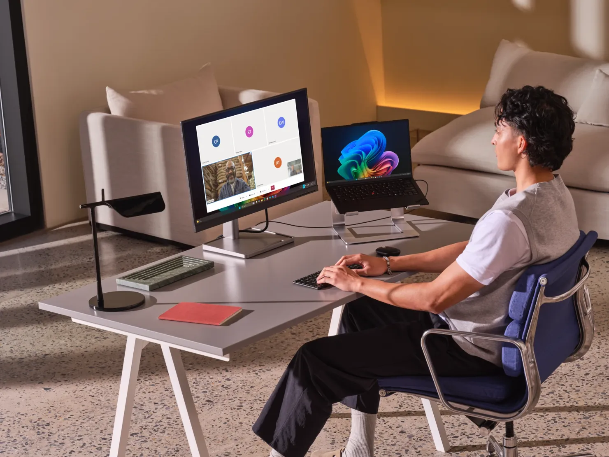
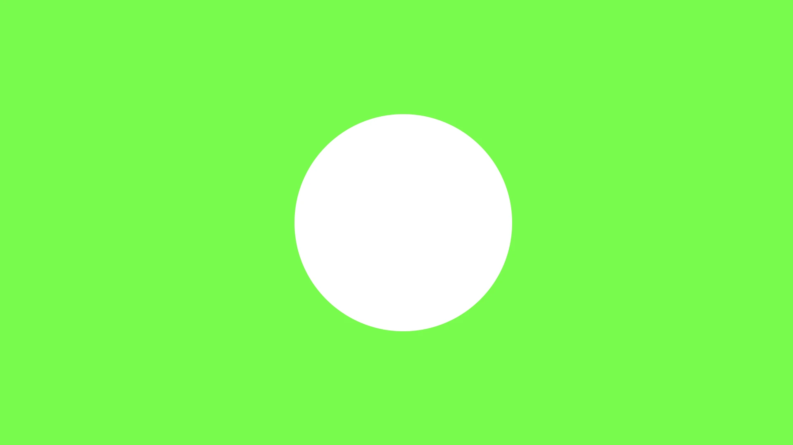
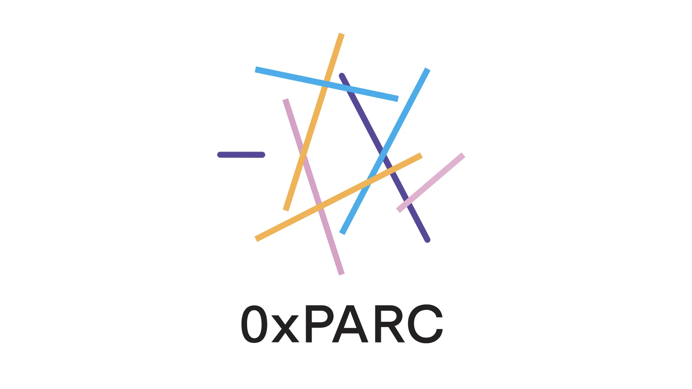

Howdy! I'm Tay Aras, a designer and product lead with 8+ years of experience, focused on emergent technologies, hybrid environments, and interaction design. My work explores connection: how we can connect people to each other, and to the things they care about. Currently at Microsoft, building virtual communication platforms and multimodal interfaces. Also Nowhere Interesting, a design studio & lab. I studied (and taught) Hybrid Environments Design at Carnegie Mellon University.
Outside of work, I play in bands and organize DIY shows across New York, Seattle, Chicago, and Pittsburgh. If you have any interesting ideas or want to chat about music, please reach out!
More about me →
Design lead for a 0-to-1 AI knowledge product built on the Microsoft 365 stack. Designed the contributor experience that lets people share what they know without exposing what was said, the web management platform behind it, and the integrations that bring it into Teams and Outlook. Shaped the default-on sharing model, opt-out mechanics, and audit surfaces throughout. In progress, under NDA.
View project →
Product lead and designer for the ACS UI Library, the component system behind Azure Communication Services' video calling, chat, and real-time collaboration. Own the roadmap and the design work that lets product teams ship accessible, production-ready communication features without building them from scratch.
View project →Designed and built a proximity app that points you toward a nearby stranger and tells you nothing else about them. An experiment in chance connection and how little you need to know about someone to get curious enough to meet them. About noticing the people around you, and what information can do to bring people together instead of keeping them apart.
View project →
Researched how to move augmented reality off the screen, from a digital layer on top of the world to experiences embedded in physical materials, spaces, and objects. Framed the design space and prototyped what it means for an experience to span both worlds at once.
View project →Designed a tangible object for staying connected with someone you live apart from, built around sharing music as the thing you pass back and forth. A song sent becomes a small ritual, and the object grows and responds as two people keep it going. An interaction study in music as a form of presence across distance.
View project →
Conducted in-house studio work and client engagements — design and product strategy, branding, product conceptualization, and futures thinking.
Visit site ↗Ran product and design workshops with founder alongside ongoing advisory, helping the team think through their product in the context of a brand vision and sustainable futures.
Visit site ↗Worked with founder to conduct product and design futures workshops and advisory, working through product vision alongside brand and identity.
Visit site ↗
Product and strategy advisory alongside brand and site design, for a set of speculative and unreleased technologies.
Visit site ↗Additional projects and clients are available per request.